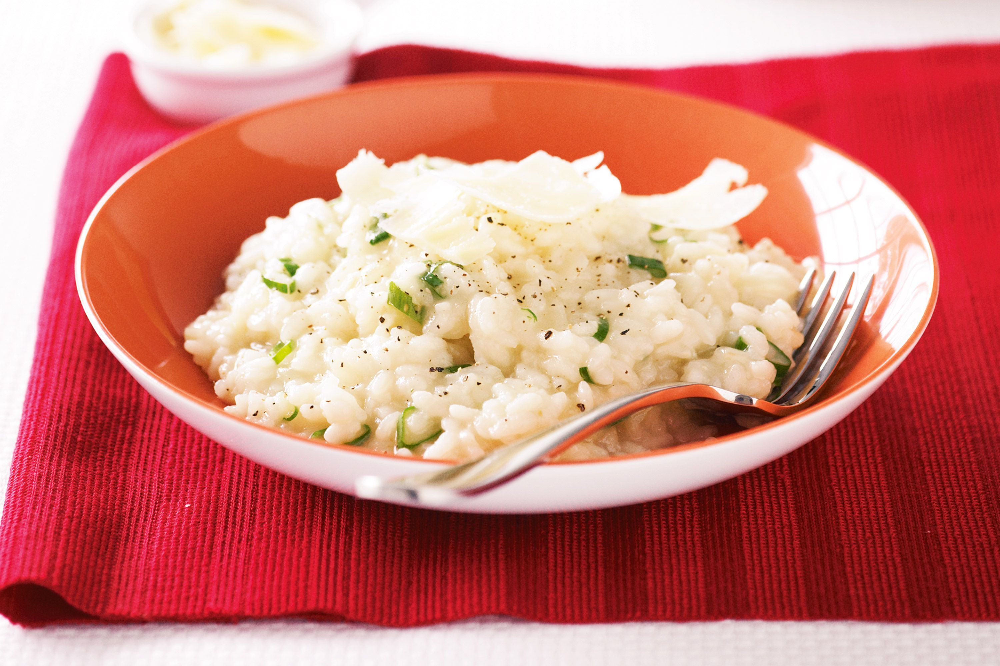
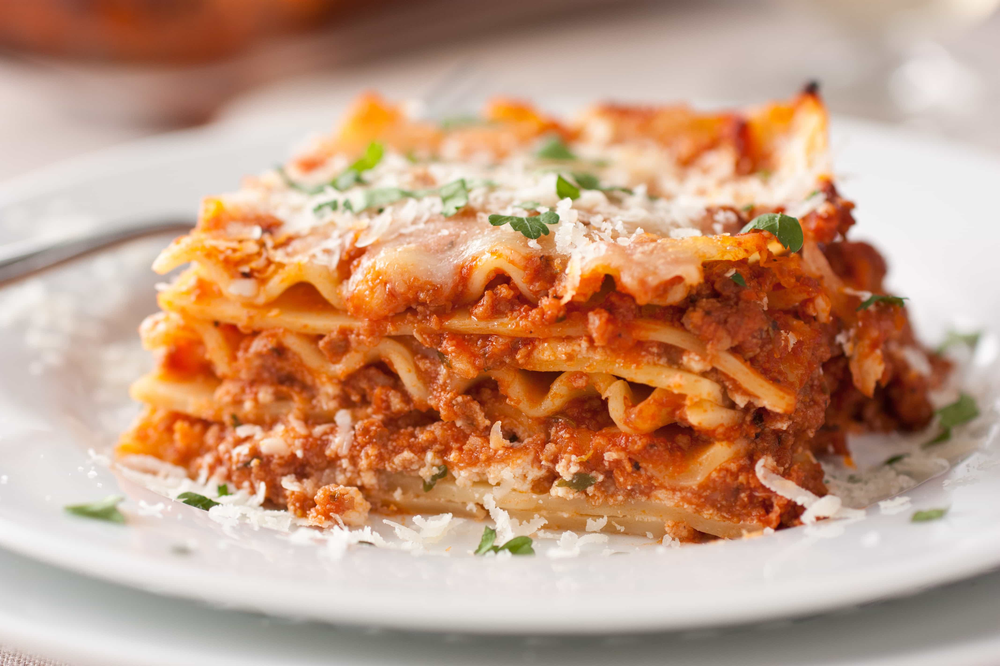

For the Polenta:
2 cups medium cornmeal
Kosher salt and black pepper
8 to 10 cups boiling water or chicken broth
For the Toppings:
3 tablespoons extra-virgin olive oil, plus more for drizzling
1 medium onion, finely diced
1½ pounds Italian fennel sausage, sweet or hot, in 2- to 3-ounce links
1 bay leaf
3 garlic cloves, minced
1 basil sprig, plus more leaves for garnish
1 cup dry red wine
1 (28-ounce) can crushed tomatoes with their juices
Red-pepper flakes, to taste
½ pound sliced wild or cultivated mushrooms (optional)
Chopped parsley, for garnish
Grated pecorino cheese, for garnish
1 Prepare the polenta: In a heavy-bottomed pot, whisk together polenta, 2 teaspoons kosher salt and 8 cups boiling water over medium-high heat. Continue whisking as mixture comes to a boil and begins to thicken. Turn heat to low and switch from a whisk to a wooden spoon. Stir every 10 minutes or so, for about 40 minutes, adding a splash of water as necessary to keep polenta from thickening too much. It may take as much as 2 cups more liquid to achieve a smooth, pourable consistency. Taste polenta for salt and add pepper to taste. Stir well, cover and keep warm for up to 30 minutes.
2 As polenta cooks, prepare the topping: Add olive oil to a Dutch oven over medium-high heat. Add onions, season with salt and pepper, and cook, stirring, until softened. Add sausages and let brown on both sides, about 2 minutes per side. Add bay leaf, garlic and basil sprig, and cook for 1 minute more. Add wine, turn up heat, and let reduce by half.
3 Add crushed tomatoes and their juices and bring to a boil. Reduce heat to a simmer and cook for about 1 hour, until sauce has thickened somewhat. Taste and adjust with salt and red-pepper flakes. (If using mushrooms, sauté over high heat in a little olive oil, until lightly browned. Season with salt and pepper.)
4 To serve, rinse a large circular wooden board, about 18-inch diameter, with cool water. (Alternatively, use a large platter.) Pour polenta onto the board, and, using a spatula, quickly spread it into a circle about ¾-inch deep.
5 Carefully ladle sauce over the polenta, leaving a 1-inch polenta border at the edges. Arrange sausages over the sauce. Top with mushrooms, if using. Sprinkle with basil, parsley and pecorino.
6 Place polenta in the center of the table, alongside bowls of grated pecorino. To serve the dish traditionally, offer guests forks but no plates and invite them to attack the polenta nearest their chair. Alternatively, cut polenta into large slices, and serve on dinner plates.

4 cups Massel chicken style liquid stock
1 tbsp olive oil
1 medium brown onion, finely chopped
1 garlic clove, crushed
1 1/2 cups arborio rice
1/2 cup dry white wine
1/3 cup finely grated parmesan cheese
4 green onions, thinly sliced
shaved parmesan cheese, to serve
1 Place stock and 1 1/2 cups cold water in a saucepan. Bring to the boil over high heat. Reduce heat to low. Simmer until needed.
2 Meanwhile, heat oil in a large, heavy-based saucepan over medium-high heat. Add brown onion. Cook, stirring, for 5 minutes or until softened. Add garlic and rice. Cook, stirring, for 1 minute. Add wine. Bring to the boil. Cook, stirring, for 3 minutes or until liquid has almost evaporated. Reduce heat to low. Add 1 ladle stock mixture to rice. Cook, stirring, until liquid has absorbed. Repeat with remaining stock mixture, 1 ladle at a time.
3 Stir in grated parmesan and green onion. Stand for 2 minutes. Serve with shaved parmesan.

1 lb lean ground beef
12 oz Italian sausage
2 Tbsp extra virgin olive oil , divided
Salt and freshly ground black pepper
1/3 cup finely chopped yellow onion
2 cloves garlic , finely minced
2 (29 oz) cans tomato puree
1 (6 oz) can tomato paste
1 Tbsp granulated sugar
1 Tbsp dried basil
1 tsp dried fennel seeds , crushed
3/4 tsp dried oregano
1/2 tsp dried thyme
1/2 tsp dried marjoram
16 oz lasagna noodles
15 oz part-skim Ricotta cheese
1 large egg
1 1/2 tsp dried parsley
16 oz whole milk mozzarella , shredded (4 cups)
2 oz Parmesan cheese , finely shredded (packed 1/2 cup)
2 oz Romano cheese , finely shredded (packed 1/2 cup), plus more for serving
1 Heat 1 Tbsp olive oil in a large enameled cast iron pot over medium-high heat. Once oil is hot, crumble beef and sausage into pot, season lightly with salt and pepper and cook, stirring occasionally until browned and cooked through.
2 Remove from heat and drain into a large bowl lined with plenty of paper towels. Pour drained beef and sausage into a food processor and pulse mixture about 10 - 15 seconds until ground into small pieces, set aside.
3 Return pot to medium-high heat, add in remaining 1 Tbsp olive oil. Once oil is hot, add onion and saute until golden, about 2 - 3 minutes, adding garlic during the last 30 seconds of sauteing.
4 Add tomato puree, tomato paste, sugar, basil, crushed fennel seeds, oregano, thyme, marjoram, then season with 1 tsp salt and more to taste and 1/4 tsp freshly ground black pepper. Add cooked meat.
5 Bring mixture to a simmer, then reduce heat to low and simmer uncovered 45 minutes - 1 hour, stirring occasionally, until sauce has reduced and thickened slightly.
6 Cook pasta to al dente according to directions listed on package (now is a good time to shred cheese). Drain pasta (do not rinse) and once cool enough to handle, align noodles in a single layer on sheets of wax paper (you can also hang some of them over the colander used to strain pasta).
7 In a mixing bowl using a fork, blend together Ricotta cheese, egg and parsley, set aside. In a mixing bowl or large ziploc bag, toss together mozzarella, Parmesan and Romano cheese, set aside
8 Preheat oven to 350 degrees. To assemble lasagna, evenly spread 1 cup ground beef pasta sauce into the bottom of a 13 x 9-inch baking dish. Align 4 - 5* lasagna noodles over sauce. Spread 1/3 of the ricotta mixture over lasagna noodle layer (it will be a thin layer) then sprinkle 1/4 of the mozzarela cheese mixture into an even layer.
9 Dollop and spread 1 1/2 cups pasta sauce evenly over cheese, then repeat this layering process 2 more times. Finish top with 1 more layer of 4 - 5 lasagna noodles, then spread 1/2 cup pasta sauce over top of noodles and sprinkle with remaining mozzarella cheese mixture. Tent baking dish with foil (don't allow foil to touch cheese on top.
10 Also if you may want to rest it on a baking sheet if it's looking very full in the baking dish to prevent it from spilling over) and bake in preheated oven 35 minutes, then remove foil and bake uncovered for 15 minutes. Serve warm garnished with additional Romano cheese and fresh parsley or basil if desired.